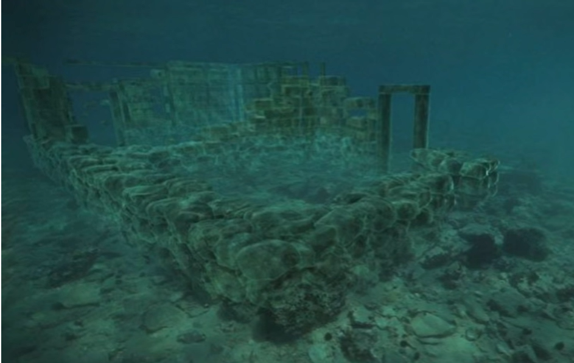

In 1967 AD, marine archaeologist Dr. "Nicolas Fleming" discovered the underwater city near the coast of southern Laconia near the Peloponnese Peninsula in Greece. The city was surveyed in 1968 by a team of archaeologists from the University of Cambridge. This city has a history of about 5000 years which makes it one of the oldest underwater cities The city is also one of the oldest existing cities in the Mediterranean and the city was very developed, and was operating from about 3500 years as an active port city with trade links around the Mediterranean and it served as an impressive gateway to mainland Greece and historians believe that the inhabitants of this city were farmers, herders, and fishermen. And producers of textiles, and archaeologists believe that the reason for the sinking of the city was a strong earthquake, which led to the collapse of the earth around the city and the city sank in the water, and despite its sinking thousands of years ago and the erosion of some of its parts, the design of the city remained as it is until the present time.
